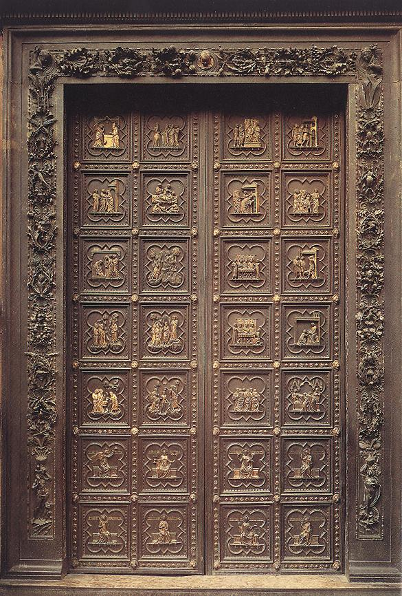
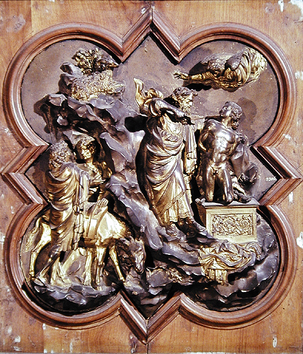
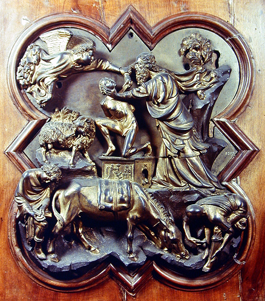
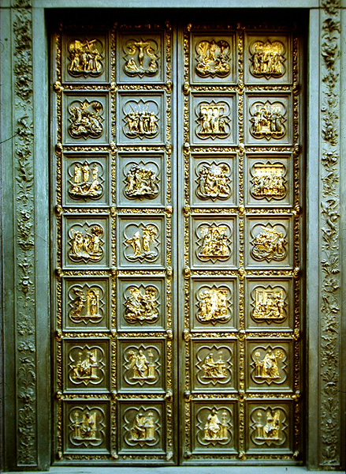
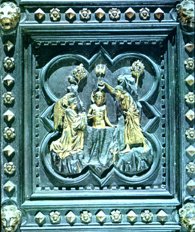
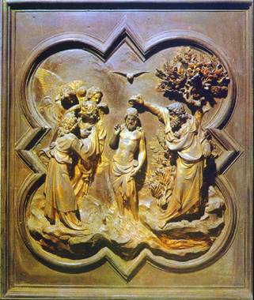
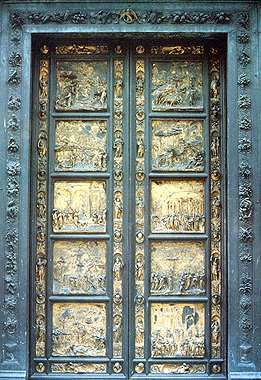
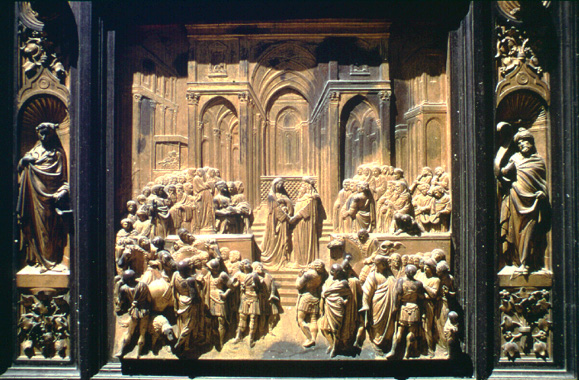

Florence
1300-1430
Starting in 1300, Europe began to
experience economic problems.
With the downturn in the climate, grain production dropped. Grain
prices rose, which meant prices of other agricultural products rose,
which led to inflation.
Kings had started to impose taxes
on landowners as a way of raising
money to run governments, and when there were not enough crops, taxes
couldn't be paid, so royal economics was pinched also. Kings
borrowed money on anticipation of revenues, assigning future revenues
to creditors, but then couldn't raise enough money to pay their debts.
Finally, the kings of England and
France refused to pay. Banks
failed; in the 1330's and 40's, several of the largest went
bankrupt, including Bardi and Peruzzi in Florence in 1343 and 1346.
This was a major problem for the
city; the population
seems to have dropped slightly in this period. But the economic
problems faced by Florence were compounded by the arrival of the Black
Death in 1347. It is estimated that between 45% and 75% of
Florence's people died in a single year. One third died in the
first six months. Its entire economic system collapsed for a time, and
the population took centuries to reach the level it had been before
1347.
Nevertheless, banking and
manufacture recovered in Florence and
elsewhere, new families rose to prominence. The new banks that
arose tended to be smaller and semi-public (i.e. not just run by one
family, but with investors), and were less dependent on lending to
political leaders.
Starting in 1320's, Florence had
begun a policy of conquering
neighboring cities and absorbing their territories; despite all of the
economic, political, and demographic problems, these wars continued,
culminating in the conquest of the port city of Pisa in 1406. By
1454, Florence controlled most of Tuscany.
The tradition of inviting an
outsider to come run Florence in times of
emergency also continued; in the early 14th century sometimes the
commune invited someone to be a leader for life.
In 1343, a new governing system put
in place. Members of the 21
official guilds could hold office (but not the laborers in the textile
industry, or aristocratic families). This included about
5000-6000 men in 1350-1400, but only about 2/3 of these were considered
eligible. Names of the eligible office-holders were put in a bag
and drawn by lot.
In 1343, for example, only 10
percent of 3000 nominees were certified
as eligible for the commune's highest office, membership in the signoria.
By now the signoria had 9
members, who, as before, each held office for 2 months. Two other
bodies, 12 buonuomini (held
office for 3 months) and 16 gonfalonieri
(4 months) advised the signoria
on policy, promulgated executive decrees, elected officials to minor
posts in bureaucracy. There were also magistrates responsible for
things to do with fortifications, security, etc.
A council of the popolo and a
council of commune comprised 500 members, who were chosen for 6-month
terms and who voted on legislation.
This system resulted soon in 2 main
parties, representing tensions
between older aristocracy and newer wealthy elite.
Then, in 1378, the Ciompi (common
workers in the wool industry) seized
control of the city and held power for three years before their revolt
was suppressed in 1381.
After this, government was once
more reorganized slightly; the result
was more conservative, with even more restricted numbers of people
eligible for office, concentrated power in hands of fewer people, which
lasted until 1434.
This was a government for the
benefit of the rich, at the expense of
the poor. It was nevertheless a very popular, stable government;
people seem to have been loyal to the state of Florence, even if they
didn't like the form of government.
The "new Athens"
It is in the early 1400's that we
see once again a burst of artistic,
intellectual, and other creative activity sponsored by the government
to bring glory to Florence. In the process, a new type of art and
architecture were created, to which we give the name Renaissance.
Around 1400, Florence was facing
threat to its political
independence. The duke of Milan was trying to conquer all of
Italy, portrayed himself as a new Caesar, bringing order and stability
to Italy.
The Florentines were wealthy and
cultured, and produced their own
propaganda. If the duke of Milan was a new Caesar, Florence
looked farther back and modelled itself on the free city-states of Rome
and ancient Etruria, and particularly announced itself to be a "new
Athens".
This explicit recognition of a link
to classical past, particularly
their identification with Athens, meant that the Florentines saw great
art, literature, philosophy, etc., as essential to a great city.
The city government sponsored
various projects that would let the world
know how well a republic could work. One of the most significant
was the commission of a new set of bronze doors for the
baptistry (see http://employees.oneonta.edu/farberas/arth/arth213/baptistry_competition.html for more information). Florence's patron saint was John the Baptist, and the baptistry therefore was a focal point of civic pride. . The south set of doors had been made by
the artist Andrea Pisano from 1330-36, in the Gothic style:

 Florence Baptistry, South Doors and detail, by Andrea Pisano,
1330-36
Florence Baptistry, South Doors and detail, by Andrea Pisano,
1330-36
For the next set of doors, now
found on the north side of the
baptistry, instead of simply hiring an artist, the guild in charge of
baptistry maintenance announced a contest among artists for the
privilege of creating the doors. Interestingly, it is in contexts
like this that we see artists emerging not just as craftspeople, but as
humanists, members of the intellectual elite, men of ideas, not just
craftspeople (remember, there was no place for art in the Seven Liberal
Arts).
The trial panels were to depict the
story of the Sacrifice of Isaac
from the Old Testament. Of the trial panels that survive, we see
the beginnings of a new style that would quickly sweep Italy and then
the rest of Europe. Two of the trial panels survive; those by
Lorenzo Ghiberti and Filippo Brunelleschi. Ghiberti, who won the
contest, created a new and different sense of space in his panel from
the earlier Gothic versions, by including elements of a landscape, and
by dividing the scene along diagonal rather than horizontal
lines. In addition, his nude torso of Isaac copies ancient Roman
sculpture.


Competition panel by Ghiberti
Competition panel by Brunelleschi

The north doors, Lorenzo Ghiberti, 1403-13


Comparison of the south and north doors: the two panels
depicting
the baptism of Christ
(left) south doors, 1330-36
(right) north doors, 1403-13
The interest in three-dimensional
space and in classical (Greek and
Roman) ways of depicting the human body were very different from
medieval art styles, and consciously reflected the artists' involvment
with the intellectual movement to link Florence to Athens.
Ghiberti and other artists carried them further in the succeeding
centuries; so that by 1429-52, when he created a third set of doors for
the west face of the baptistry, they were in a style that was
completely removed from medieval art.


The west doors, the "Gates of Paradise"and detail showing
Solomon and
Sheba, Lorenzo Ghiberti, 1429-52